3.5. Résoudre les conflits dans JOSM
Objectifs du cours
Cette section fournit :
- Une vue d’ensemble des conflits de données dans OpenStreetMap.
- Des instructions étape par étape pour résoudre les conflits de données dans le JOSM.
- Des conseils sur la prévention et la gestion des conflits de données.
Activités d’apprentissage
D’autres contributeurs peuvent avoir édité les mêmes éléments que vous dans le JOSM. Il se peut également que des données différentes aient été collectées sur le terrain pour les mêmes éléments. Ces deux situations entraînent des conflits de données au cours du processus de téléchargement. Par conséquent, il est essentiel que les numériseurs apprennent à connaître les conflits de données dans OpenStreetMap, les types de conflits et la manière de les résoudre à l’aide du JOSM.
Résoudre les conflits dans JOSM
1. Conflits de données dans OpenStreetMap
Lors du téléchargement de vos modifications dans le JOSM, vous avez peut-être reçu un message comme celui-ci :
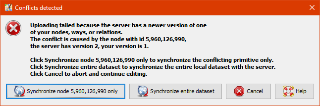
Ceci indique un conflit de données dans OSM. Un conflit s’est produit parce que vous avez modifié les mêmes données/objets qu’un autre contributeur simultanément. L’autre contributeur a donc téléchargé ses modifications en premier et celles-ci ont été reçues par le serveur OSM. Vous tentez de télécharger les mêmes données/objets avec vos propres modifications. Par conséquent, vos modifications sont automatiquement rejetées par le serveur parce qu’elles sont source de confusion.
Vous rencontrerez des conflits de données dans le SCOCI lorsque vous modifierez, ajouterez ou supprimerez des objets sur lesquels travaille un autre contributeur. L’autre contributeur a téléchargé ses modifications un peu avant vous. Par conséquent, lorsque vous essayez de télécharger vos modifications, le serveur OSM est désorienté car il ne sait pas quelles modifications sont correctes. Dans ce cas, le conflit de données doit être résolu avant que vous ne téléchargiez vos modifications.
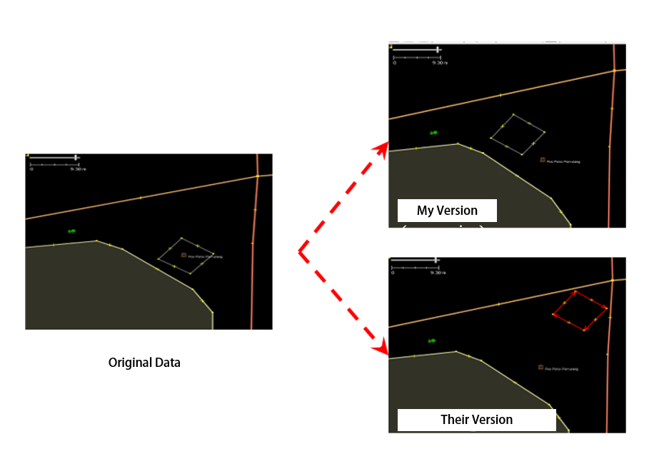
L’image ci-dessus illustre un conflit potentiel dû au positionnement différent de l’objet rectangulaire dans Ma version et dans Leur version (qui a déjà été reçue par le serveur). Pour résoudre ce conflit, vous devez choisir entre ‘Ma version’ et ‘Leur version’.
2. Types de conflit de données dans JOSM
2.1 Propriétés des conflits
Un conflit de propriétés se produit lorsqu’un objet a été déplacé ou supprimé et qu’un ou plusieurs de ses nœuds se trouvent à un emplacement différent de l’autre version.
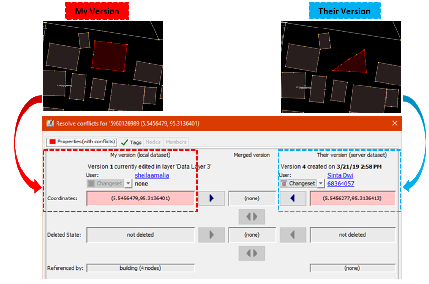
L’image ci-dessus illustre un conflit de propriétés dans JOSM. Dans Ma version, l’objet est carré et dans Leur version, un nœud d’angle a été supprimé. Pour résoudre ce problème, vous devez choisir la version correcte.
2.2 Conflit d’étiquetage
Un conflit de balises se produit lorsque des balises différentes ont été attribuées au même objet par plusieurs contributeurs. La balise peut être supprimée ou remplacée par l’autre version.
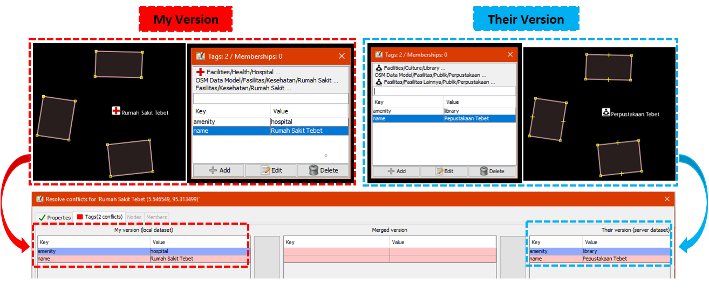
L’image ci-dessus illustre les différentes étiquettes pour le même objet entre deux versions du JOSM. Ma version comporte l’étiquette Rumah Sakit (amenity = hospital) et la valeur du nom ‘Rumah Sakit Tebet Raya’. Alors que leur version a un tag (amenity = clinic) et une valeur de nom de ‘RS Tebet Timur’. Vous devez choisir la version qui contient les informations correctes avant de la télécharger sur le serveur.
2.3 Conflit de nœuds
Un conflit de nœuds se produit lorsqu’il y a des différences dans la direction d’une voie ou si des nœuds d’une voie ont été supprimés ou déplacés.
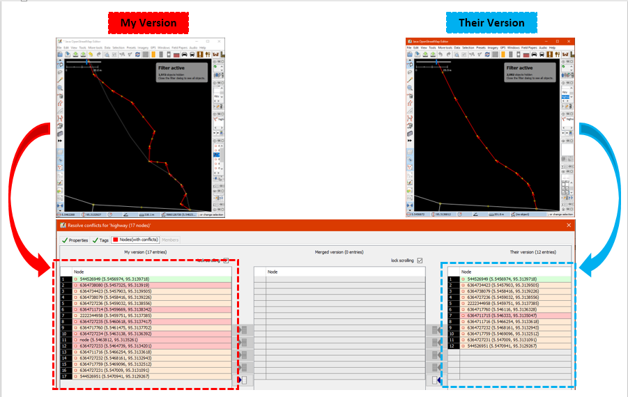
3. Reparer les conflits de données dans JOSM
La résolution des conflits de données dans le JOSM est assez simple, même si la plupart des contributeurs OSM la trouvent déroutante. Essentiellement, vous devez décider quelle est la bonne version et choisir de conserver votre version ou de supprimer votre version et d’utiliser la leur. Pour corriger des données conflictuelles dans JOSM:
- Lorsque la fenêtre de conflit s’affiche, vous pourriez être enclin à sélectionner l’option Synchroniser le nœud 5 960 126 uniquement. Cependant, cett e option ne résoudra le conflit que dans un seul nœud. Sélectionnez plutôt Synchroniser l’ensemble des données afin de résoudre tous les nœuds conflictuels en une seule fois.
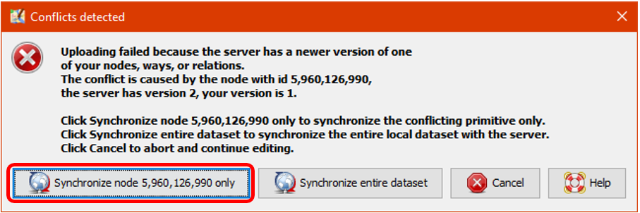
- JOSM will then display the number of conflicts, select OK.
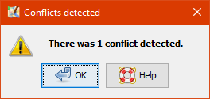
- Dans le menu “Windows”, sélectionnez Conflit pour afficher la fenêtre de conflit. Cela active une liste de conflits dans le panneau Conflit situé dans le coin inférieur droit du JOSM. Vous pouvez choisir le conflit que vous souhaitez résoudre et sélectionner Résoudre.
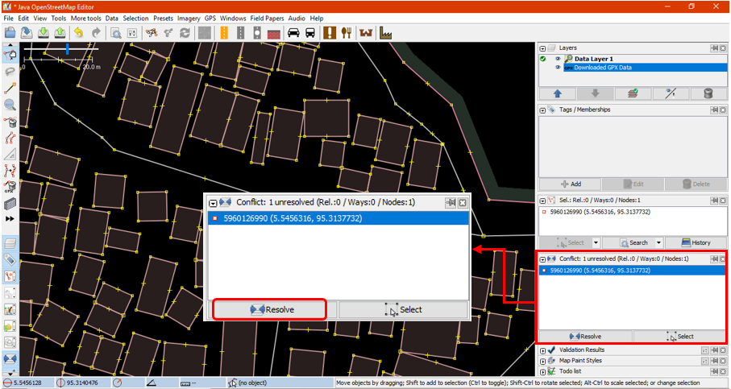
- Lorsque vous sélectionnez le bouton Résoudre, la fenêtre de conflit apparaît et affiche les détails du conflit. Cela peut sembler compliqué, mais c’est en fait assez simple. Vous pouvez savoir quel type de conflit a été détecté car un symbole de carré rouge s’affiche dans l’onglet correspondant (propriétés, balises ou nœuds). Vous pouvez consulter la liste des coordonnées modifiées ou déplacées, comme le montre l’image ci-dessous.

- vous ne pouvez résoudre qu’un seul conflit à la fois. Si vous êtes sûr que votre version est la bonne (vous modifiez / ajoutez l’objet sur la base de votre cartographie d’enquête sur le terrain ou vous connaissez déjà l’objet personnellement), sélectionnez Ma version (jeu de données local). En revanche, si vous n’êtes pas sûr de votre version et que vous pensez que l’autre version est plus convaincante, sélectionnez Leur version (jeu de données du serveur). Sélectionnez:
 dans la version que vous pensez être la bonne. Si le conflit a été résolu, le symbole dans l’onglet devient:
dans la version que vous pensez être la bonne. Si le conflit a été résolu, le symbole dans l’onglet devient:

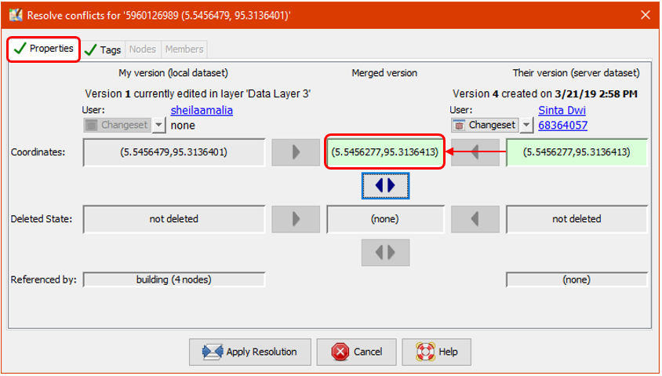
- Après avoir sélectionné la bonne version, assurez-vous que la couleur de la boîte de conflit est passée du rose au vert. Cela indique que vous avez réussi à résoudre le conflit.
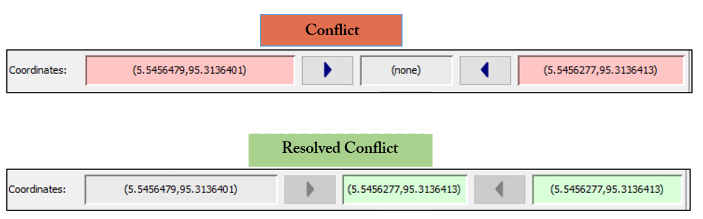
- Sélectionnez Appliquer la résolution comme indiqué dans l’image ci-dessus. Lorsque vous avez résolu tous les conflits, vous pouvez télécharger vos modifications OSM.
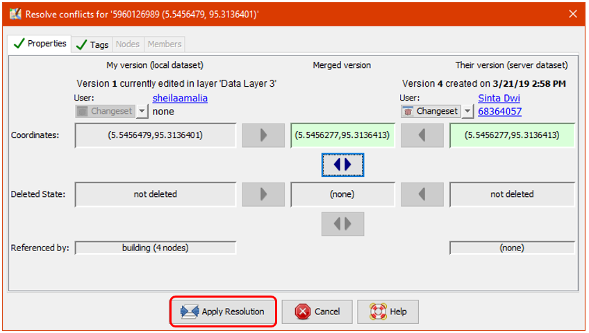
- Vous pouvez également résoudre les conflits en cliquant avec le bouton droit de la souris sur l’un d’entre eux dans la fenêtre de conflit et en sélectionnant soit Résoudre en fonction de mes versions, soit Résoudre en fonction de leurs versions. Vous pouvez également cliquer avec le bouton droit de la souris et zoomer sur le conflit.
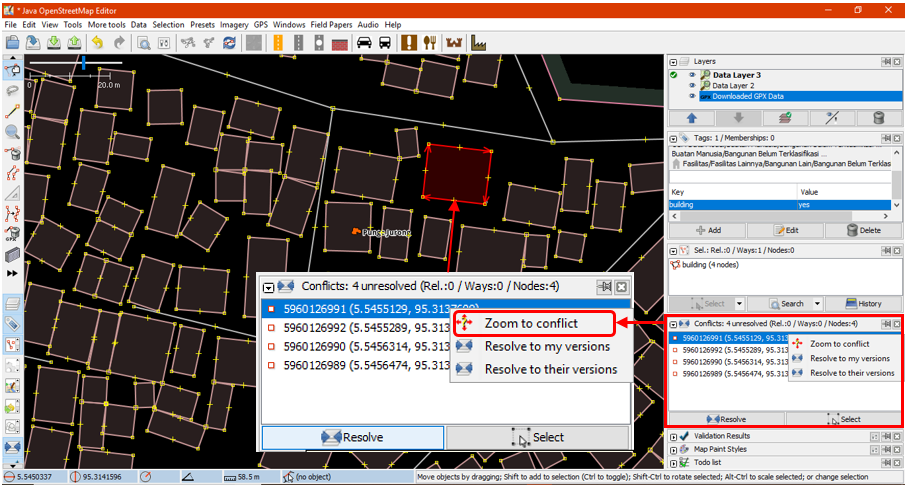
| Astuces: |
|---|
| Vous ne pouvez pas télécharger les modifications tant que vous n’avez pas résolu tous les conflits. Soyez prudent lorsque vous résolvez les conflits et vérifiez-les un par un. |
4. éviter les conflits de données sur JOSM
Pour éviter les conflits:
- Téléchargez vos modifications en continu
Pour minimiser les conflits, vous devez télécharger fréquemment. Téléchargez vos modifications tous les 20 bâtiments ou toutes les 15 minutes. Plus vous attendez pour télécharger, plus il y a de chances qu’un autre contributeur ait modifié et téléchargé les mêmes données.
Vous pouvez mettre à jour vos données OSM avant de les télécharger. Cela vous permet de récupérer les dernières données OSM sur le serveur avant de les télécharger. Select Fichier → mettre à jour les données ou Mise à jour modifiée et attendez que la mise à jour soit terminée. Vous pouvez ensuite télécharger vos modifications.
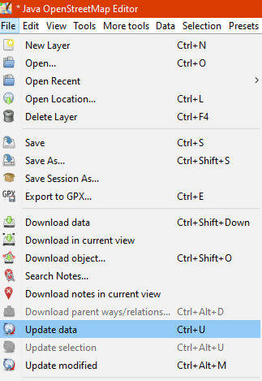
- Modifier uniquement dans la zone téléchargée
Limitez l’édition à votre zone téléchargée afin de minimiser les risques de conflit dans le JOSM. La zone en dehors de votre zone téléchargée est marquée par des lignes diagonales, ne modifiez pas cette région.
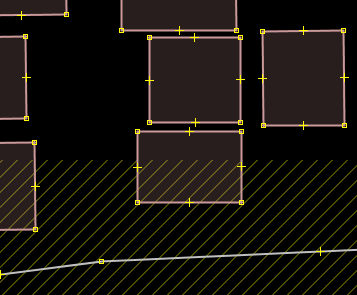
- Utiliser le Gestionnaire de Tâche de HOT
Si vous voulez faire de la cartographie collaborative, vous pouvez utiliser Tasking Manager. Il divise une zone de projet en une grille de tâches. Une fois qu’une tâche est sélectionnée, elle est verrouillée et ne peut être choisie par un autre contributeur. Cela permet à de nombreuses personnes de travailler dans la même zone en même temps tout en limitant les risques de conflits.
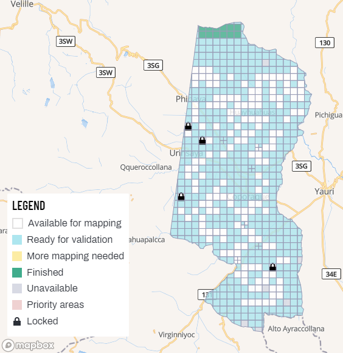
[Quiz] Testez vos connaissances
-
Ma version désigne les données locales que vous allez télécharger sur le serveur OSM, tandis que Leur version désigne les données du serveur qui existent déjà.
a. Vrai
b. Faux
-
Pour éviter les conflits, il est préférable de télécharger la nuit, lorsque tout le monde n’est pas réveillé et n’utilise pas OpenStreetMap.
a. Vrai
b. Faux
-
Les balises conflictuelles sont celles qui présentent des différences entre les balises que vous allez télécharger et les objets existants dans le serveur.
a. Vrai
b. Faux
Answer: 1.A | 2.B | 3.A
Liste de contrôle des activités
À la fin de cette section, vous devriez être en mesure de :
- Comprendre le concept de conflit de données dans OSM.
- De résoudre un conflit de données